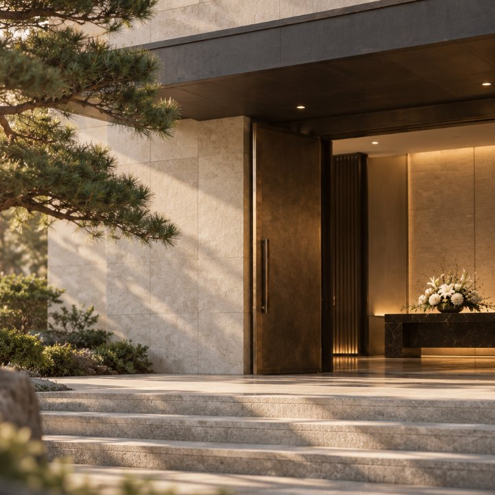
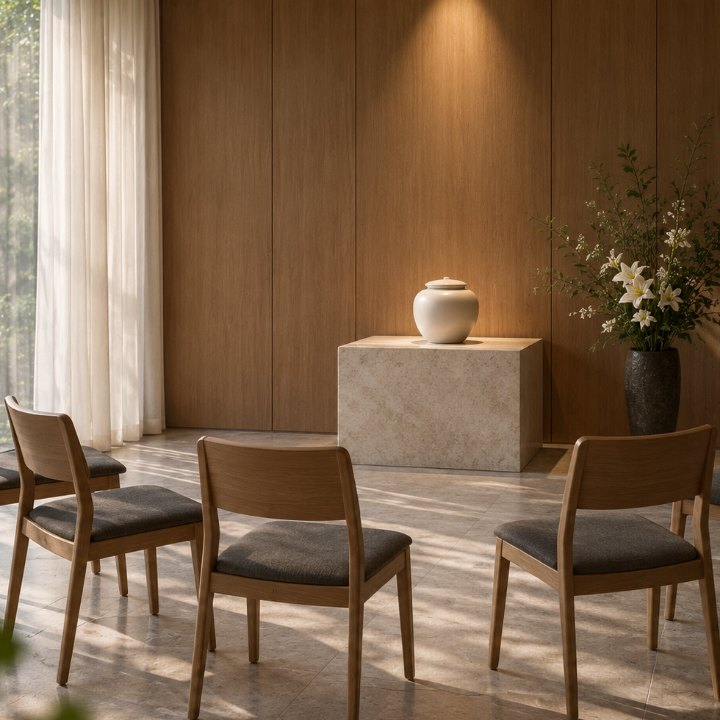
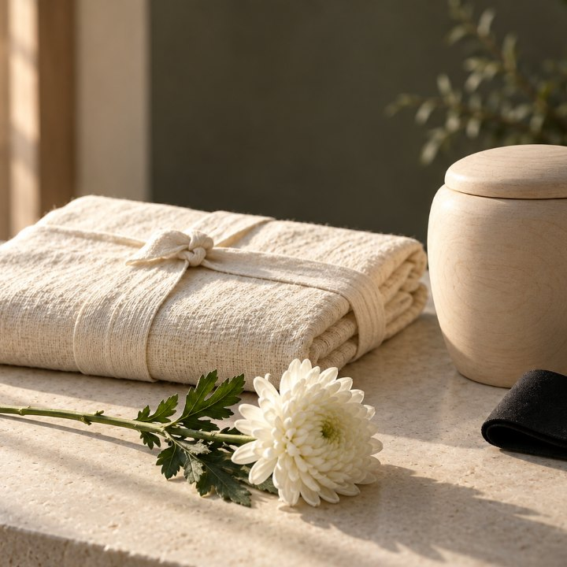

미리 보는 장례
장례 모습
고마움 상조가 모시는 장례가 어떤 모습인지 미리 보실 수 있게 모았습니다. 지금은 참고용 이미지이고, 유족의 동의를 받은 실제 사진으로 하나씩 바꿔 갑니다.
장례식장과 고별 공간


상품마다


장례용품

후기
여러분의 이야기가 후기로 채워집니다.
장례를 마친 뒤 가족께 후기를 남기실 수 있는 링크를 보내 드립니다. 게시해도 좋다고 동의하신 글만, 이름과 나이처럼 알아볼 수 있는 내용은 빼고 올립니다.
이 쪽의 사진은 모두 참고용 이미지입니다. 실제 시설·용품과 다를 수 있습니다.
당신이 있어 고마움을 배웠습니다.